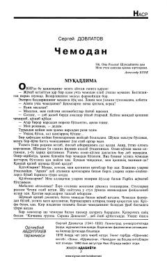

CMuallifning hayotiy xotiralari va buyumlar orqali ochiladigan insoniy taqdirlar haqidagi asar.
Ushbu asar muallifning hayoti va emigratsiya davridagi xotiralari asosida yozilgan bo'lib, har bir buyum ortida yashiringan insoniy taqdirlarni ochib beradi. Dovlatov o'ziga xos kinoya va samimiyat bilan sovet davri turmush tarzi hamda insoniy munosabatlar haqida hikoya qiladi.